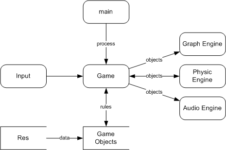

В этом документе отображается процесс разработки Steel Engine, интерфейсы модулей, объяснения выбранных решений. Структура документа совпадает со структурой движка. В квадратных скобочках пишется автор.
Всё что описано в этом документе в определённой степени проработано, и не будет меняться кардинально.
В документе должны присутствовать:
· Текущее состояние движка
· Предыдущее состояние и причиной отказа
· Идеи по дальнейшему улучшению (TODO)
· Нереализованные части
· Непонятные моменты и объяснения
· То, что присутствует, но должно быть удалено
· Недописанные части
Resource Collection (res/res.h)
Steel Engine является движком для компьютерных игр и аналогичных программ. Основные преимущества движка в его модульной структуре и расширяемости.
Steel Engine состоит из нескольких модулей.

DFD верхнего уровня
main (core) получает управление от ОС, инициализирует все модули, в главном цикле программы поочерёдно передаёт управление всем частям движка. К модулю core также относятся базовые тиры данных, логгер, консоль.
Game не является частью движка. Этот модуль содержит правила игры, и он индивидуален для каждого проекта, который использует движок. Game управляет игровыми объектами и передаёт их движкам для обработки. В этом модуле должен быть AI.
Game objects – это набор игровых объектов. Они определяют, как их нужно рисовать и куда им нужно двигаться. Часть основных объектов (модель, источник освещения, уровень) находиться в движке, в специфичные объекты (юниты, оружие) являются частью Game.
Res – коллекция ресурсов. Модуль для хранения, загрузки и контроля над игровыми ресурсами, такими как: image, model, audio. Вся работа с файловой системой должна происходить через этот модуль. res является глобалным и используется всеми частями программы, но в большей степени игровыми объектами.
Graph, Physic, Audio Engines – это модули для обработки объектов. Независимы друг от друга и заменяемы.
Input отвечает за ввод данных с клавиатуры и мышки, и используется модулем Game.
Каждый объект идентифицируется адресом в памяти, по которому он расположен.
[Игровой] объект – нечто, и имеющее игровую логику. Объекты управляются Game, используют сервисы, предоставляемые движками через интерфейсы в самих движках. Каждый объект идентифицируется числом (uid, object unique identifier). Объект не может менять свой идентификатор. Идентификатор должен быть больше нуля 0.
Объект имеет положение в пространстве (Position). Положение – это смещение, поворот и масштабирование. Положение задаётся матрицей 3x4.
Движок – это заменяемая часть, которая занимается обработкой переданных ей объектов. Объект не должен уметь себя рисовать – он только должен уметь рассказывать движку, как он выглядит. А движок уже сам решает, как рисовать объект, рисовать ли вообще, как накладывать тени от других объектов, используя все современные достижения графических ускорителей.
Схема работы такова: вначале объект добавляется в движок (inject).
Далее существует два способа общения:
1. объект сам обращается к движку за сервисом. Удобен при небольших и редких изменениях.
2. движок просит объект обновить информацию. Удобен при изменении внутреннего состояния движка, например, перерисовка всей сцены.
Надо иметь возможность заменять следующие модули для каждой системы частиц:
· Эмиттер (точечный, разброс, равномерный разброс)
· Renderer (спрайты, система спрайтов, многогранники, меташарики)
· Physic
Существует 5 основных типов ресурсов: Config, Image, Model, Material, Script. Для хранения каждого типа ресурса существует своя коллекция ресурсов (Соответственно resConfig, resImage и т.д.)
Для загрузки картинки нужно указать её относительное имя без расширения.
Image *a = resImage.add(“dir/name”);
Коллекция попробует загрузить ресурс всеми определёнными способами по порядку. Для указания своего способа загрузки существует функция registerResLoader. Она принимает указатель на функция, которая создаёт ресурс по указанному имени и директории (точки отсчёта имён). В принципе, эта функция может и не загружать ресурс, а создавать его на лету.
resModel.registerResLoader(createClass<_3DS, Model>);
Функция createClass создаёт класс _3DS, вызывает его загрузчик init, устанавливает уникальный идентификатор и возвращает созданный класс. В registerResLoader можно передать и другой загрузчик. Например, createImage, которая загружает изображения всех возможных комбинаций типов. Она сама ищет нужный файл по указанному параметру name. Остальные параметры могут быть как указанными явно, так и опущенными.
name[.cube][.normal|.height][.bmp|.tga]
cube – кубическая текстура. 6 текстур в одной сверху-вниз (+X, -X, +Y, -Y, +Z, -Z)
normal – карта нормалей
height – карты высот. Преобразовываетя к варте нормалей
bmp, tga – конкретные типы хранения изображений.
Передаваемое имя файла в resImage.add(“dir/name”) указываетя относительно текущей директории в коллекции. Текущая директория меняется при рекурсивном вызове загрузчиков. Например, config -> model -> material -> image. То есть, имя файла указывается относительно директории предыдущего загруженного ресурса. Имя может содержать директории (dir/file, ../dir/file). Можно указать абсолютный путь к ресурсу – для того надо начать путь c /. Максимальная глубина вложенности рекурсивных вызовов – 100. Для первого вызовы текущей директорией является res (корень ресурсов). Полное имя ресурса – имя относительно корня.
У процедуры add есть второй параметр типа bool. Если он равняется false, то после загрузки ресурса текущая директория не восстанавливается и надо это делать вручную с помощью вызова pop.
Удаление ресурсов происходит с помощью функции remove(string FullName). У каждого ресурса есть количество ссылок, которые ссылаются на него (links) – сколько раз его хотели загрузить. При запросе на загрузку ресурса с уже существующим именем ресурс не загружается, а возвращается уже загруженный из коллекции и увеличивается количество ссылок. При вызове remove количество ссылок уменьшается. Если ссылок больше нет (=0), то ресурс удаляется физически (Вызывается его деструктор).
Итого, ресурсы надо освобождать, иначе они до завершения программы будут в коллекции. Внутри коллекции не могут дублироваться полные имена, но могут быть два файла с одинаковым именем, но в разных директориях. Кроме того, в двух разных коллекциях могут находиться два ресурса с одинаковыми полными именами. Это достигается благодаря тому, что имена ресурсов хранятся без расширений. Можно без проблем изменить формат хранения ресурса (другое расширение) без изменения ссылок на него. То есть, в директории могут быть файлы model.3ds и model.bmp, ресурсы будут в двух коллекциях, и их имена будут model.
Модуль для хранения, загрузки и контроля над игровыми ресурсами, такими как: image, model, audio. Главный класс ResCollection получает запросы на загрузку ресурсов, обрабатывает их, исключает дублирование ресурсов.
ResCollection является шаблоном и может хранить любых потомков класса-параметра.
Поля:
string id – строковой идентификатор коллекции (image, model)
vector<ResStorage> data – массив хранимых ресурсов и дополнительная информация к каждому ресурсу.
ResStorage:
object - ссылка на ресурс
id - уникальный идентификатор ресурса
links – количество ссылок на этот ресурс. При добавлении дублируемого ресурса счётчик увеличивается на 1. При удалении - уменьшается на 1. Если количество ссылок становится равным 1, то ресурс удаляется из коллекции. (аналогично Linux ext2fs).
name – полное имя ресурса.
index – отображение полных имён ресурсов на индекс в массиве data. Для увеличения скорости поиска по имени.
resIndex – отображение указателя ресурса на индекс в массиве data. Для увеличения скорости удаления ресурса по ссылке на него.
Interface:
operator[], get - Вернуть ресурс по полному имени
add - Добавить ресурс по имени и типу, если ресурса еще нет в коллекции
remove - удалить ресурс
pop – описание выше
Вся работа с файловой системой должна происходить через этот класс. Он отвечает за чтение файла из файловой системы или архивов. Интерфейс класса совместим с fstream.
Этот класс отвечает за генерирование уникальных идентификаторов для всех объектов (сродни sequence в PostgreSQL).
Класс - храниель и рагрузчик одного ресурса. Хранение - стандартизовано для каждого типа ресурса. Загруска - для каждого типа может быть несколько классов для загрузки. От этого класса наследуются классы для хранения ресурсов для каждого типа (image, model). В них реализуется деструктор, который уничтожает структуры, созданные при загрузке. От них наследуются загрузчики, которые переопределяют метод init. init загружает ресурс или генерирует по строковому идентификатору.
Это самый простой тип ресурса.
Предназначен для хранения текста. Загружает текст из текстового файла. Внутренне представление – unsigned char *.(ASCII)
unsigned char *getText(void) const – сам текст в виде z-terminated string (в конце /0)
int getLength(void) const – длина текста без /0
Смотрите file_formats/scene
uid (unique identifier) – идентификатор объекта или ресурса, положительное целое число (unsigned int). У двух разных объектов должны быть различные идентификаторы.
За генерацию уникальных идентификаторов отвечает класс IdGenerator (interface.h). Для каждого типа объектов существует свой идентификатор. Для игровых объектов - objectIdGenerator.
enum{ local, global }
Тип положения объекта: local – относительно родителя, global – в глобальной системе координат.
Основные геометрические типы данных хранятся в директории math.
Используется для хранения трёхмерного вектора, положения точки в пространстве, направляющих прямых, нормалей к плоскостям и т.д.
Содержит 3 поля: float x, y, z;
Конструкторы:
v3() – не инициализирует ничего (для повышения производительности)
v3(float x, float y, float z)
Чтение и запись полей осуществляется по их именам. Кроме того доступен operator[](int i) для доступа к полям: 0 - x, 1 - y, 2 – z
Инициализация: loadZero(), loadOne()
И множество полезных операторов: векторное и скалярное произведение, + - * /
operator== и operator!= сравнивают вектора по компонентам.
Полезные функции: getLength, normalize, getNormalized, getSquaredLength
Кроме того доступена упрощенная версия v3 без конструктора. v3simple. Можно использовать только тогда, когда нельзя использовать v3 (например, в union).
Полностью аналогичен классу v3. Реже используется и поэтому может не содержать все функции, которые есть в v3. При необходимости можно добавить их.
Квадратная матрица 3x3. Используется как матрица преобразования координат.
Содержит 3 строчки по 3 числа в каждой. Доступ к полям осуществляется по имени. 9 чисел доступны двумя способами: как одномерный массив из 9ти элементов и как двумерный массив 3x3 (первый индекс – номер строки).
Нет конструктора, так как этот класс используется в union.
Инициализаторы: loadIdentity (единичная матрица), loadZero (нулевая матрица).
Пергруженные операторы: + - * /
matrix33 operator*(matrix33 operand) перемножает 2 матрицы. Из первой берутся строки, из второй столбцы.
setRotation[X, Y, Z, Axis] делают матрицу матрицей поворота вдоль указанной оси на указанный угол в радианах.
setScale – делает матрицу масштабирования
getInverse – возвращает обратную матрицу
Примеры использования: изменения системы координат
matrix33 a,b,c;
a.setRotationX(1);
b = a.getInverse();
c = a*b; // должна получиться единичная матрица
v3(1,2,3)*a; // вектор (1,2,3) повернутый на 1 радиан в положительном направлении вдоль оси X
b.setRotationY(2);
c = a*b;
v3(1,2,3)*c; // вектор (1,2,3) повернутый на 1 радиан в положительном направлении вдоль оси X, и после этого еще на 2 радиана вдоль оси Y
Матрица из трёх строк и четырёх столбцов. Служит эмуляцией матрицы 4x4, к которой нижняя строка равна (0,0,0,1). Интерфейс аналогичен matrix33. matrix34 состоит из matrix33 (первые 3 колонки) и v3 (четвертая колонка)
setTranslation и getTranslation работают с вектором. Эти функции делают матрицу переноса.
Примеры использования: изменения системы координат
matrix34 a,b, c;
a.setRotationZ(M_PI/2);
a.setTranslation(v3(1,0,0));
c *= a*a;
v3 result = c*v3(0,0,0); // должно получиться (1,1,0)
Синоним matrix34
res, objectIdGenerator, globalTimer
STEEL_OS – отвечает за компиляцию для под определённую ОС (OS_WIN32=1, OS_LINUX=2)
STEEL_COMPILER – содержит идентификатор компилятора (COMPILER _VS8=1, COMPILER _GCC=2)
Эти директивы выставляются в проектных файлах как параметры компилятора (-D), а не определяются внутри кода.
STEEL_COMPILER_VERSION – версия компилятора, умноженная на 10. Например, вместо 8.0 будет 80, а вместо 3.4.2 будет 34.
STEEL_VECTOR - определена, когда svector использует реализацию steel::vector (common/steel_vector.h), иначе использует std::vector
LIB_SDL – определена, когда проект компилируется с поддержкой SDL
LIB_STEEL – определена при компиляции проекта в статическую библиотеку.
LIB_OPENAL – определена, если проект использует OpenAL.
std, steel
Стандартный способ сообщения информации пользователю – через class Logger. Существует глобальный экземпляр класса steel::log, через который следует выводить все сообщения. Лоррег использует глобальный таймер, который отсчитывает время от момента запуска программы.
Все сообщения выводятся в файл steel.log
log_msg(string keywords, string message)
Добавление сообщения в файл, перед текстом ставится время от начала открытия лог-файла. Str – текст сообщения. keywords – ключевые слова для быстрого поиска и отсеивания нужных записей в логе. Ключевые слова отделяются пробелом. Обычно ключевое слово это имя модуля или функции, откуда пришло сообщение.
Дополнительно к главному лог-файлу создаются лог файлы в директории log для каждого ключевого слова. В начале работы программы все дополнительные лог фалы стираются.
LogFilter отвечает за отсеивание лишних сообщений в главном лог-файле. Фильтр – это набор ключевых слов, отледённый пробелами. Правила фильтра проверябтся посдедовательно. Если с сообщении есть ключевое слово из фильтра, то оно выводиться, если же фильтр начинается с -, то отбрасывается. Например, если фильтр “error -info”, то будут выводиться все сообщения с error, а если error нет, то будут отбрасываться все сообщения с info.
Кроме этого определены макросы:
assert(expression, message) – проверка истинности выражения expression во время выполнения программы. Если expression не выполняется, то выводится сообщение в файл и вызывается throw.
cassert(expression) – проверка условия во время компиляции. Если условие не выполняется, то компиляция прерывается с ошибкой «cannot allocate an array of constant size 0»
debug(message) – именно этим макросом надо выводить все временные отладочные сообщения в лог файл.
log_msg(keywords, message) – именно этим макросом надо выводить сообщения в лог-файл
abort_init(keywords, message) – неудачный выход из процедуры с сообщением в лог
KindeX